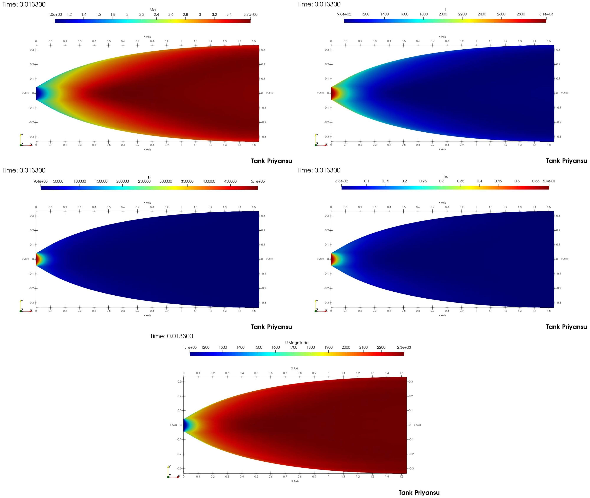
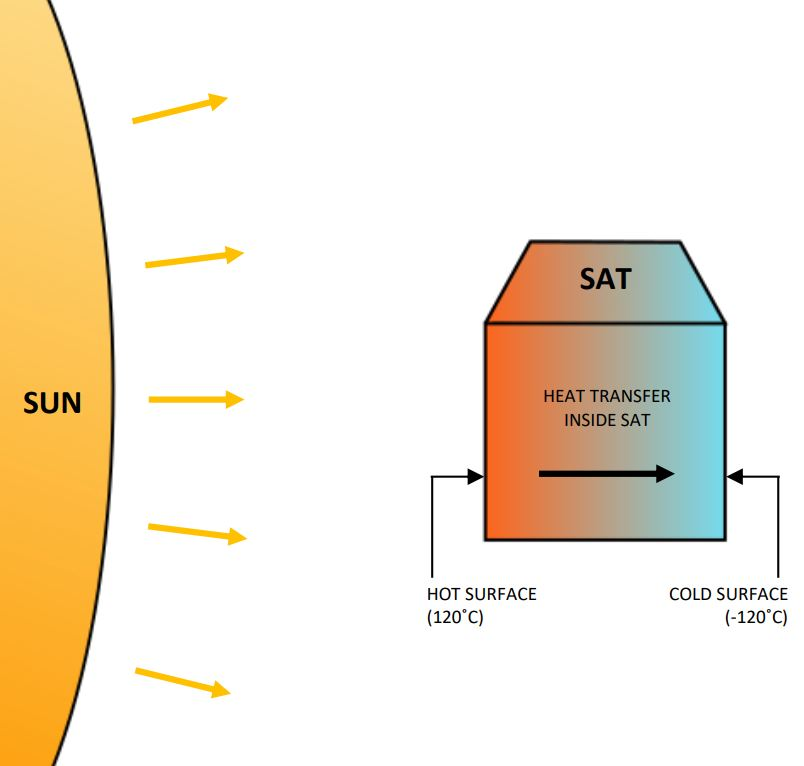

Structural Testing & Data Analysis of PRL 2.5m Telescope Pier

Developed mathematical model to investigate modal properties of established structure based on statestical approach and a case study was applied to PRL's 2.5m telescope at Gurushikhsr Observatory, Mt. Abu, Rajasthan, India.
satTank is a web database for current active satellites into orbit and predicts their future orbital characteristics by propagating the current data available from the space agencies.
Design of Supersonic Rocket Nozzle using MOC

A contour of supersonic nozzle for rocket has been calculated using MOC and the design was validated for required performance using OpenFOAM CFD Toolbox.
Outer Space Power Production

Fisiability of power production in space using different steam power cycles working by utilising radiation of sun. Power can be utilised for different satellites in LEO orbit.
Powered Exoskeleton, a way to produce or suppliment human muscle by electric powered drives. Can be employed for paralised people and military.